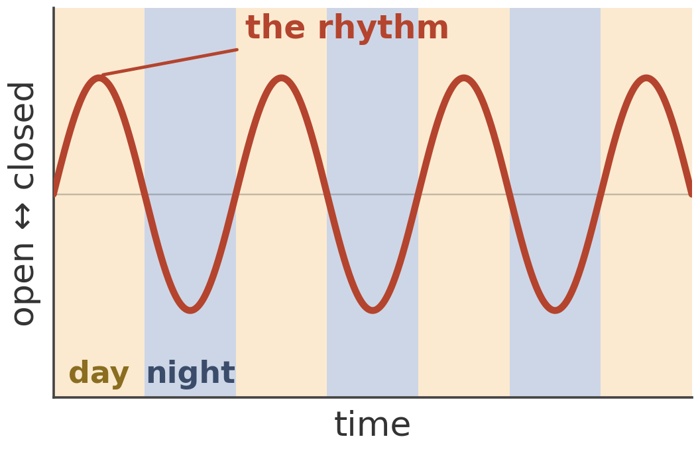

Circadian Rhythm (\(\pi\))
If you were to watch the water lily here through a full day you would see its flowers open in the morning and close again in the evening.
However, if it was left in a room with the lights left on permanently, it would keep opening and closing on roughly the same rhythm for a while, gradually drifting out of step with real time. The water lily doesn’t simply react to light like an on/off switch. It has its own internal molecular clock, which is kept in sync with the natural cycle of day and night.

The cells in your body also have an internal molecular clock. If you’ve ever experienced jet lag, your internal molecular clock has become out-of-sync with your new day-night cycle. It can take several days of exposure to the light and dark cycle in a new environment for your body clock to adjust and get back in sync.
Working out when an oscillator can become entrained, or synchronised with an outside rhythm, is a mathematical problem. It usually depends on the type of oscillator and how it responds to the signal that is trying to bring it into sync.
Play with it: tune the lamp until it syncs
The simulated water lily below has a fixed rhythm of its own – 24.6 hours, set by the plant, not by you. What you control is an artificial lamp shining on it: how long its day/night cycle lasts, and how strong (bright) it is.
The water lily needs to adjust it’s cycle so that its leaves are open in the morning as the sun comes up. Then it can maximise the amount of light that it receives.
Get the lamp’s day length close enough to 24.6 hours, and strong enough, and the flower locks into a steady daily rhythm. Get it wrong – too far off, or too dim – and no amount of waiting fixes it: the flower keeps sliding in and out of step with your lamp, opening a little earlier or later each cycle, forever. Try to find the smallest strength that still gets it to lock.